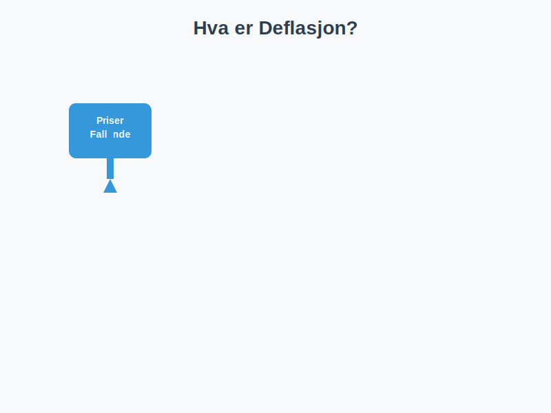

Deflasjon er den generelle nedgangen i prisnivået på varer og tjenester over tid, som resulterer i økt kjøpekraft for penger. Dette fenomenet er motstykket til inflasjon, og har viktige implikasjoner for regnskap, investeringer og bedriftsdrift. For en helhetlig oversikt over de makroøkonomiske kreftene som ligger til grunn for prisutvikling, se Makroøkonomi.

Hva er Deflasjon?
Deflasjon oppstår når den generelle prisen på varer og tjenester faller over tid. Dette betyr at samme mengde penger kjøper mer enn før. Deflasjon måles vanligvis som en prosentvis endring i konsumprisindeksen (KPI).
Grunnleggende Formel for Deflasjonsrate
Deflasjonsrate (%) = ((KPI i fjor - KPI i år) / KPI i fjor) × 100
Årsaker til Deflasjon
- Etterspørselsdrevet deflasjon: Når samlet etterspørsel i økonomien synker, for eksempel ved lavere forbruk eller redusert offentlige utgifter.
- Kostnadsdrevet deflasjon: Synkende produksjonskostnader, for eksempel reduserte råvarepriser eller teknologiske effektiviseringer.
- Innskjerpet pengepolitikk: Høyere renter og trangere kredittløsninger som demper låne- og forbruksvilje.
Typer Deflasjon og Relaterte Begreper
| Type | Beskrivelse |
|---|---|
| Etterspørselsdrevet deflasjon | Lavere total etterspørsel fører til prisfall |
| Kostnadsdrevet deflasjon | Redusert produksjonskostnad gir lavere sluttpriser |
| Innebygd deflasjon | Forventninger om prisfall blir selvoppfyllende på grunn av lønns- og prisindeksering |
Påvirkning på Regnskap og Bedriftsdrift
- Historisk kost-prinsippet: Deflasjon kan føre til at bokførte verdier overestimerer reell verdi på eiendeler som anleggsmidler.
- Varelager: Lavere prisnivå gjør at eldre lagerverdier ikke reflekterer dagens markedspriser.
- Resultatmarginer: Fallet i salgspriser kan presse marginene hvis kostnadene ikke justeres tilsvarende.
- Gjeldsbyrde: Deflasjon øker realverdien av nominell gjeld, noe som kan belaste balansens passivaside.
Forskjell mellom Inflasjon og Deflasjon
| Aspekt | Inflasjon | Deflasjon |
|---|---|---|
| Prisnivå | Generell prisøkning over tid | Generell prisnedgang over tid |
| Kjøpekraft | Reduseres | Økes |
| Gjeld | Redusert reell gjeldsbyrde | Økt reell gjeldsbyrde |
| Regnskapseffekt | Bokførte verdier underestimerer reell kostnad | Bokførte verdier overestimerer reell verdi |
Praktiske Eksempler
Et selskap som produserer elektronikk opplever at KPI faller fra 105 til 100 i løpet av ett år:
| År | KPI |
|---|---|
| Fjoråret | 105 |
| Dette året | 100 |
Deflasjonsrate = ((105 - 100) / 105) × 100 ≈ 4,76%
Håndtering i Regnskapspraksis
I land med vedvarende deflasjon kan man bruke justerte regnskapsprinsipper:
- Nedskrivning av eiendeler: For å unngå oververdsetting ved historisk kost.
- Riktig vurdering av varelager: Jevnlig verdivurdering til virkelig verdi.
- Noteopplysninger: Transparens om deflasjonspåvirkning i noter til regnskapet.